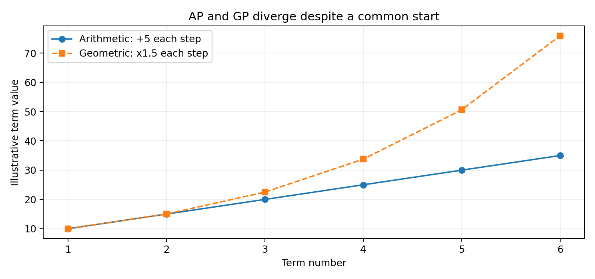
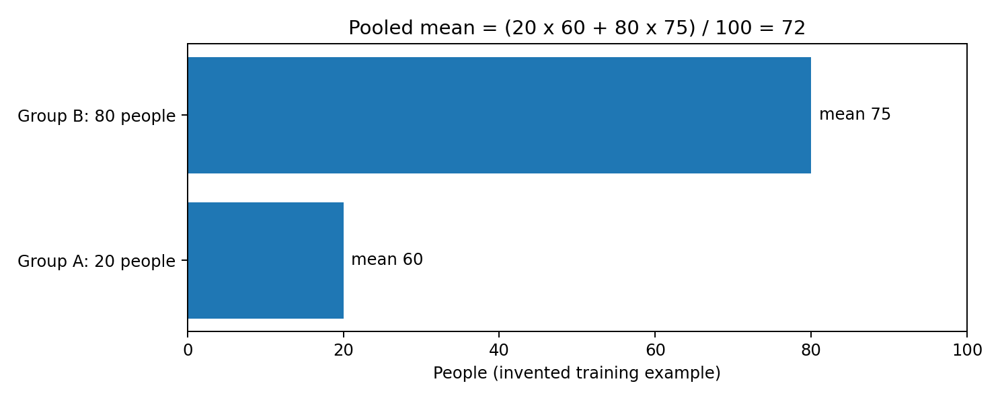
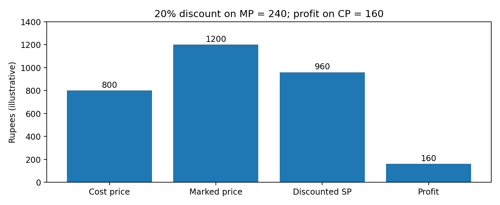

Integrated PDF · Editable master · Preserved original PDF
TGPSC Group I | Paper V | Unit III | Topic 3 | 25 October 2026 | Independent English study draft | NOT academically approved
The original commission-hosted Group I Notification 02/2024, Paper V, Unit III, item 3 states: “Quantitative Aptitude – Number Sequences, Series, Averages, Number Systems, Ratio and Proportion, Profit and Loss.” [S01]. The commission-hosted original 50-page PDF was reopened and the exact line inspected directly on 25 October 2026. All worked datasets, prices and administrative examples below are invented for teaching unless explicitly identified as a published government fact. This chapter does not claim that any practice question is an official previous-year question.
| Syllabus element | Detailed sections | Core competence |
|---|---|---|
| Number sequences and series | 1–4, 17 | Infer and justify a rule, sum finite series, reject underdetermination |
| Number systems | 5–8 | Divisibility, remainders, HCF/LCM, rational numbers, indices |
| Averages | 9–11 | Weighted and pooled averages, correction, interpretation |
| Ratio and proportion | 12–14 | Sharing, direct/inverse variation, mixture, scale |
| Profit and loss | 15–16 | Cost, selling price, discounts, mark-up, margins, tax distinctions |
| Integrated aptitude and error checks | 17–18 | Multi-step applications, alternative methods, robust conclusions |
Quantitative aptitude is not a contest to remember the most formulas. It is a disciplined translation of verbal constraints into numerical relationships, followed by calculation and a check that the answer fits the problem. Number patterns demand an explicit generating rule; averages demand valid weights and denominators; ratios demand correct part-to-whole conversion; and commercial arithmetic demands clarity about cost, price, discount and tax. The same principles govern fair comparisons of Telangana districts, procurement bids and programme indicators. A reliable answer identifies assumptions and reports units rather than presenting a bare number.
A sequence is an ordered list a1,a2,...,an whose position matters. Its rule may be given by a direct expression for the nth term or by a recurrence connecting neighbouring terms. In an arithmetic sequence each adjacent difference is constant; in a geometric sequence each nonzero term has the same ratio to the previous term. For 7, 12, 17, 22, the first differences are 5, so the natural arithmetic continuation is 27. For 3, 9, 27, 81, the common multiplier is 3, giving 243. These are explanations, not proofs that an arbitrary list can have only one next term.
A finite set of terms is mathematically compatible with infinitely many rules. For instance, 2, 4, 8 might suggest doubling to 16, but a polynomial can fit the three observed terms and yield any desired fourth value. Aptitude exams normally imply a simple rule class. A responsible solver identifies the simplest consistent structure and tests it against every given term. If two simple patterns survive, report ambiguity unless answer options or an explicit constraint resolve it. This is particularly important for sequences interleaving odd and even positions, where the apparent adjacent differences may look irregular while each subsequence follows a clean progression.
Worked example: 4, 9, 16, 25, 36 follows consecutive squares 2²,3²,4²,5²,6²; the next term is 7²=49. A second example 5, 11, 19, 29, 41 has differences 6,8,10,12; the next difference is 14, giving 55. The latter is quadratic under the usual constant-second-difference assumption. In an exam, write the difference row before committing to a rule: 5,11,19,29,41; below it 6,8,10,12; below that 2,2,2. This short audit makes the inference transparent.
Rule-identification stress test. Suppose a test offers 1, 2, 4, 8 and asks for the fifth term. Doubling predicts 16, but the polynomial P(n)=2^(n-1)+c(n-1)(n-2)(n-3)(n-4) agrees with the first four observations for every constant c and can produce many fifth values. The expression is not an appropriate quick exam shortcut; it is a proof that observations alone do not force a unique continuation. State the rule being assumed, test it on all terms, and prefer a concise recurrence when the question is explicitly a conventional pattern exercise. In administrative trend analysis, the same caution prevents a fitted curve from being mistaken for an established process.
An arithmetic progression (AP) is a sequence with a fixed difference d. If the first term is a, the nth term is a+(n−1)d. The nth-term formula solves location questions; the sum formula solves accumulation questions. Pairing the first and last terms of a finite AP gives equal pair sums, so S_n=n(first+last)/2. Substituting last=a+(n−1)d gives S_n=n[2a+(n−1)d]/2. This derivation also explains why the formula works for decreasing progressions with negative d.
Worked example: A fictional district office plans 18, 21, 24, ... training seats per batch, increasing by three each time. For 12 batches the final batch has 18+11×3=51 seats. The total is 12×(18+51)/2=414 seats. The common error is to multiply the last batch's capacity by 12, giving 612, as though every batch had the final capacity. A second error is to use n rather than n−1 in the last-term expression. Check the formula at n=1: it must return a.
AP can model a constant increment, but not all real growth is linear. A state programme may add a fixed 200 beneficiaries each month only as a planning assumption. If growth is proportional to the existing total, a geometric model may be more appropriate. Extrapolation is not warranted merely because three past observations happen to be equally spaced. The aptitude skill is to solve the stated model; the administrative skill is to distinguish that mathematical model from a verified forecast.
Boundary and verification example. Consider a decreasing allocation series 100, 92, 84, ... with d=-8. The eighth term is 100+7(-8)=44 and the first eight terms total 8(100+44)/2=576. The answer can be checked independently by pairing first with last: (100+44), (92+52), (84+60), (76+68), each pair 144, four pairs 576. This pairing check is valuable because a negative difference can be mishandled when brackets are omitted. If a proposed policy would continue beyond the point where seat allocations become negative, the mathematical AP remains defined but the real-world interpretation fails; constrain the model to a feasible horizon.
A geometric progression (GP) has a constant ratio r between successive nonzero terms. Its nth term is ar^(n−1). To derive its sum, write S=a+ar+...+ar^(n−1), multiply by r, and subtract: (r−1)S=a(r^n−1). Thus S=a(r^n−1)/(r−1) when r≠1. For r=1, the sum is simply na. A negative ratio alternates signs; a ratio between zero and one shrinks magnitudes; and a ratio greater than one grows rapidly.
Worked example: A hypothetical outreach campaign sends 2, 6, 18, 54 and 162 messages in five waves, tripling each time. The fifth wave contains 2×3^4=162 messages, and the total is 2(3^5−1)/(3−1)=242. Do not confuse total messages with distinct recipients: if recipients overlap, the count of unique people may be lower. Similarly, a population increasing by 10% per year has multiplication factor 1.10; after two years the factor is 1.21, not 1.20. Compound growth and repeated percentage changes are multiplicative.
An infinite GP has a finite sum only if |r|<1, when the sum approaches a/(1−r). For 8+4+2+1+..., r=1/2 and the sum is 16. If r=2, partial sums grow without bound; applying a/(1−r) would yield a nonsensical negative value. In a timed exam, test the convergence condition before using an infinite-sum shortcut. For repeated depreciation, r might be 0.8, but the value never becomes literally zero after a finite number of periods in that idealised model.
Compound-change counterexample. A quantity rises by 25% and then falls by 20%. Multipliers 1.25 and 0.80 give exactly 1.00, so the final quantity equals the initial one, despite the percentages not being equal. By contrast, a 20% rise followed by a 20% fall gives 1.20×0.80=0.96, a 4% net loss. For a negative ratio, the GP 5,-10,20,-40 has r=-2 and partial sums that oscillate in sign and grow in magnitude; it has no convergent infinite sum. These examples distinguish repeated percentage change from adding percentage points, and convergence from a formula applied outside its permitted domain.
Not every sequence is a simple AP or GP. An interleaved sequence may contain two rules: 2, 10, 4, 20, 6, 30, ... has odd-position terms 2,4,6 and even-position terms 10,20,30, so the next term is 8. A recurrence can depend on previous terms, as in 1,1,2,3,5,8,13, where each term after the second equals the preceding two terms' sum. A digit operation may alternate with addition; for example, 3, 7, 14, 18, 36 could be +4, ×2, +4, ×2, giving 40 next.
A practical diagnostic sequence is: calculate first differences; if not constant, inspect second differences; inspect ratios if all relevant terms are nonzero; split alternating positions; test squares, cubes, primes or factorials; then test a simple recurrence. The order reduces random pattern hunting. In 1, 4, 9, 16, 25 the differences 3,5,7,9 suggest squares, but it is still useful to state the square interpretation explicitly. For 2, 6, 12, 20, 30 the nth term n(n+1), which can be seen as consecutive products.
A key distinction is a descriptive rule versus a causal law. One can fit a quadratic to a short dataset, but that does not establish a physical or economic mechanism. In examination settings, choose the simplest defensible mathematical continuation. In government planning, verify whether the generating process genuinely supports extrapolation. This is a valuable bridge between mental ability and data interpretation: an exact fit to observed values does not guarantee reliable prediction beyond them.
Alternative-pattern audit. For 1, 2, 4, 7, 11, successive differences are 1,2,3,4; the next difference 5 suggests 16. But for 2, 5, 10, 17, 26 the differences are 3,5,7,9 and the terms are n²+1, giving 37 next. Before selecting an answer, test the inferred rule at every available position, not just the final pair. If an alternating sequence contains six terms, analyse positions 1,3,5 and 2,4,6 separately. A recurrence such as a_n=a_(n-1)+a_(n-2) also needs starting values: without them, the recurrence does not determine a unique numerical sequence.
Natural numbers are counting numbers; whole numbers include zero; integers include negative values; rational numbers can be expressed as p/q with integers p and nonzero q; irrational numbers cannot. Real numbers contain rational and irrational numbers. Every integer is rational, but not every rational number is an integer. A terminating decimal or a repeating decimal is rational. The decimal 0.125=1/8, and 0.333...=1/3. In contrast, √2 is irrational. Classifying the number correctly helps select legitimate operations and compare magnitudes.
The positional decimal system represents a number as a sum of digits multiplied by powers of ten. Thus 5,072=5×1000+0×100+7×10+2. When a two-digit number has tens digit a and units digit b, its value is 10a+b; reversing the digits gives 10b+a. Their difference is 9(a−b), always divisible by 9. This algebraic fact is often more efficient than trying random two-digit numbers. Place-value reasoning also underlies rounding: 4.995 rounded to two decimal places is 5.00 under the usual half-up convention, although software may use other rounding conventions.
Fractions should be compared using common denominators or cross multiplication with attention to signs. For positive denominators, 5/8 versus 3/5 compares 25 with 24, so 5/8 is larger. A percentage is a fraction per hundred; 12.5%=1/8. When multiplying a quantity by 0.85, one is retaining 85% of the original, not reducing it by 85%. The distinction is crucial in profit-and-loss problems and in interpreting coverage rates. Never add percentages that refer to different denominators without reconstructing the underlying counts.
Rationality and rounding trap. The decimal 0.1 is exactly 1/10 in mathematics, but binary floating-point software often stores only an approximation; a machine calculation may display a value near 0.30000000000000004 for 0.1+0.2. That does not make 0.1 irrational. For monetary arithmetic, integer paise or fixed decimal arithmetic can avoid unintended binary-rounding artefacts. Separately, a fraction has a terminating base-ten decimal precisely when its reduced denominator has no prime factors other than 2 and 5. Thus 7/40 terminates (0.175), while 1/6 repeats. These tests connect classification, prime factorisation and sensible numerical representation.
A positive integer a divides b if b=ak for an integer k. Prime numbers greater than one have exactly two positive divisors; one is neither prime nor composite. Unique prime factorisation lets us identify factors, HCF and LCM. For 360=2³×3²×5, the number of positive divisors is (3+1)(2+1)(1+1)=24. To count divisors, add one to each prime exponent and multiply; do not add the exponents. The sum of prime exponents is not the number of divisors.
Divisibility shortcuts follow place value: a number is divisible by 3 or 9 when its digit sum is; by 4 when its last two digits are divisible by 4; by 8 when its last three digits are; by 11 when the alternating digit sum is a multiple of 11. For 5,544, the digit sum is 18, so it is divisible by 9; its last two digits 44 are divisible by 4. For 11, alternating positions give (5+4)−(5+4)=0, so it is divisible by 11. These tests are efficient, but the underlying reasoning remains the decimal place-value expansion modulo the divisor.
The division algorithm states N=dq+r, with 0≤r<d when d>0. For 137 divided by 12, q=11 and r=5. In modular notation 137≡5 (mod 12). Remainders are particularly useful for cyclic patterns. For instance, the units digit of 7^n repeats 7,9,3,1 with period four. Since 2026 mod 4 is 2, the units digit of 7^2026 is 9. Be careful when the exponent is a multiple of the cycle length: the corresponding cycle position is the last one, not a fictitious zero-th digit.
Remainder discipline. To find the remainder of 7^100 on division by 5, reduce 7 to 2 modulo 5 and note the cycle 2,4,3,1. Because 100 is divisible by four, the remainder is 1. This is different from computing a decimal approximation of the enormous power. A remainder must satisfy 0≤r<d for positive divisor d: a claimed remainder of 8 after division by 5 is invalid even if an arithmetic step seems plausible. Divisibility shortcuts apply to integers written in the relevant base, and a digit-sum rule for 9 should not be transferred blindly to another divisor.
The highest common factor (HCF) is the largest positive integer dividing each given integer. The least common multiple (LCM) is the smallest positive integer divisible by each. Prime factorisation uses minimum exponents for HCF and maximum exponents for LCM. For 72=2³×3² and 120=2³×3×5, HCF=2³×3=24 and LCM=2³×3²×5=360. The identity HCF(a,b)×LCM(a,b)=ab holds for two positive integers, but should not be extended to three by simply multiplying all three numbers.
Euclid's algorithm is faster for large numbers: 252=198×1+54; 198=54×3+36; 54=36×1+18; 36=18×2+0. Therefore HCF(252,198)=18. It works because the common divisors of a and b are exactly the common divisors of b and the remainder a mod b. The algorithm's invariant is a useful explanation if a mains answer asks for method rather than just the result.
Worked application: Three hypothetical inspection teams visit a site every 12, 18 and 30 days, starting together today. Their next common visit occurs after LCM(12,18,30)=180 days. If the question asks how many joint visits occur within 360 days including the starting day, the answer is three: day 0, day 180 and day 360. Confusing an interval with an inclusive count is a frequent error. If events have different starting offsets, LCM alone is insufficient; one must solve simultaneous congruences and verify that a common meeting day exists.
Three-number HCF–LCM warning. For 6, 10 and 15, the HCF is 1 and the LCM is 30, but the product of the three inputs is 900, not HCF×LCM=30. The familiar identity HCF(a,b)×LCM(a,b)=ab is a two-number identity, not a general three-number rule. For multiple schedules, use prime exponents or repeated pairwise LCM: LCM(LCM(6,10),15)=LCM(30,15)=30. If teams begin on different days, a common cycle length alone does not establish the first simultaneous visit; starting offsets create a congruence problem and may make coincidence impossible.
Index laws compress repeated multiplication: a^m×a^n=a^(m+n); (a^m)^n=a^(mn); a^0=1 for a≠0; and a^(−n)=1/a^n. The laws require attention to domains, especially zero and even roots of negative numbers in the real system. A square root symbol √x conventionally denotes the nonnegative principal square root for x≥0. Thus √49=7, whereas the equation x²=49 has two solutions x=±7. Confusing these two statements creates avoidable errors.
Parity is a powerful shortcut. An even number is 2k; an odd number is 2k+1. The sum of two odd numbers is even; an odd number multiplied by an odd number remains odd; the square of an odd number is odd. A perfect square modulo four is 0 or 1, never 2 or 3. Hence 2026 cannot be a perfect square because 2026 mod 4=2. Such modular checks can reject impossible answers without a full calculation.
Approximation should be deliberate, not sloppy. To estimate 19.8×50.2, use 20×50≈1000, then calculate precisely if options are close: (20−0.2)(50+0.2)=1000+4−10−0.04=993.96. Estimation is a sanity check and can identify a misplaced decimal. In financial arithmetic, distinguish rounding the final answer from rounding intermediate steps; early rounding may accumulate error. In an exam, keep fractions exact until the end whenever possible, especially when discounts and ratios combine.
Domain check for powers and roots. The expression √(a²)=|a| for real a, not always a. With a=-7, √49=7; writing -7 is a sign error. Likewise, a^(-2)=1/a² requires a≠0, and 0^0 should not be assigned a universal value in an elementary algebra calculation without a specified convention. Estimation can expose a misplaced decimal: √50 lies between 7 and 8 because 49<50<64. For percentage calculations, distinguish multiplying by 0.01 from dividing by 0.01; a one-step scale check against the original magnitude is often faster than recalculating the entire expression.
The arithmetic mean of n observations is their sum divided by n. For five marks 42,48,50,55,65, the sum is 260 and the mean is 52. A mean is a balance point: the sum of deviations from it is zero. Adding a constant c to every observation increases the mean by c; multiplying every observation by k multiplies the mean by k. These properties provide rapid checks on transformed data. They do not imply that the mean must be an observed value: a mean household size of 4.3 is perfectly meaningful even though no household has 0.3 of a person.
The mean can be distorted by extremes. For monthly hypothetical travel expenses 500,550,600,650,3000, the mean is 1060, while the median is 600. The mean answers the total-per-person budget question; the median better describes a typical middle observation. Neither is automatically 'correct' for every policy question. The mode identifies the most common value, and the range or standard deviation adds information about dispersion. Averages without spread can hide unequal outcomes across mandals or categories.
Worked example: A clerk records eight application-processing times with mean 12 days. The total is 8×12=96 days. A ninth application taking 21 days changes the mean to (96+21)/9=13 days. It is wrong to average 12 and 21 to get 16.5, because the first figure summarises eight observations and the second summarises one. When the count is not given, the combined mean generally cannot be reconstructed from subgroup means alone. State the missing weight rather than assume equal group sizes.
Sensitivity to outliers. Suppose four observations are 20, 21, 22 and 97. Their mean is 40, while their median is 21.5. Neither statistic is arithmetically wrong; they answer different questions. Reporting only the mean could misrepresent the typical observation when one large value dominates. A second diagnostic is to verify that the mean of nonnegative values cannot be negative and must lie between their minimum and maximum. If a computed average falls outside that interval, revisit the sum, count and units. In a programme report, also distinguish a mean over all eligible people from a mean over only those who responded.
A weighted mean uses the contribution of each observation or subgroup to the total. For two groups with counts n1,n2 and means m1,m2, the pooled mean is (n1m1+n2m2)/(n1+n2). For example, a fictional Telangana training programme has 40 trainees averaging 68 marks and 60 trainees averaging 73 marks. The combined mean is (40×68+60×73)/100=71, not the unweighted average 70.5. The latter would incorrectly assign equal influence to groups of unequal size.
Weights may represent frequency, credit hours, expenditure or population, but must match the target measure. A price index with expenditure weights answers a different question from the unweighted average of item price changes. If a district's population changes over time, comparing a weighted state average requires attention to changing weights. The famous reversal known as Simpson's paradox can occur when subgroup composition shifts; a combined rate may move differently from every subgroup rate. Thus the mathematical act of averaging has an interpretation, not just an algorithm.
A common aptitude shortcut uses alligation: if two group averages are m1<m<m2, the required group-size ratio n1:n2=(m2−m):(m−m1). Suppose one batch averages 60, another 80, and their combined average is 72. Then sizes are in ratio (80−72):(72−60)=8:12=2:3. This follows by solving 60n1+80n2=72(n1+n2). Alligation is a rearranged weighted-average equation, not a separate magic rule; it fails if the target mean lies outside the range of positive-weight component means.
Denominator audit for rates. Consider two centres with 10 of 20 applicants admitted and 72 of 80 admitted. Their admission rates are 50% and 90%, but the pooled rate is (10+72)/(20+80)=82%, not the simple midpoint 70%. Averaging the percentages without the applicant counts changes the target population. Conversely, if the question explicitly asks for the average performance of two centres giving each centre equal policy weight, 70% may be the intended measure. The arithmetic is conditional on the estimand. Always write the numerator and denominator for each percentage before deciding whether the weights are individuals, households, facilities or administrative units.
If an observation was entered incorrectly, correct the total first and divide by the original count. Suppose 25 entries were reported with mean 46, so the recorded total is 1150. One entry 39 should have been 93; the corrected total is 1150−39+93=1204 and the corrected mean is 48.16. The count remains 25. A frequent mistake is to change the count when only a value changes. If an observation is added or removed, however, both total and count must change.
A moving average is the average of a sliding window of observations. It can smooth a noisy monthly series, but does not necessarily forecast the next month accurately. If three monthly fictional application counts are 100,130,160, the three-month average is 130. After a fourth month of 190, the next three-month moving average is (130+160+190)/3=160. The overlapping windows are not independent samples. A weighted moving average gives more emphasis to selected periods, but its weights must be stated and sum to one if interpreted as a conventional weighted mean.
Questions involving average speed require special care. For equal distances travelled at speeds u and v, average speed is 2uv/(u+v), not (u+v)/2. The arithmetic mean of speeds applies to equal travel times. For equal 60-km legs at 30 and 60 km/h, times are 2 hours and 1 hour; overall speed is 120/3=40 km/h. Although speed-time-distance is explicitly in the next syllabus item, this example illustrates why an average's weighting basis matters. Do not silently import assumptions from a neighbouring topic.
Replacement versus addition. Five observations average 30, so their total is 150. Replacing an erroneous entry 8 with 18 changes the total to 160 but leaves n=5, giving mean 32. Adding a new sixth observation of 18 instead produces 168/6=28. These superficially similar statements require different denominators. If the dataset is a rolling four-month window and the oldest value 10 is dropped while a new value 50 is added, update the window sum by -10+50, not by simply adding 50. A correction log should record which observation was changed, the prior value, the replacement and the effective observation count.
A ratio a:b compares two quantities after expressing them in compatible units. The statement that rural:urban trainees = 3:2 means rural trainees are three-fifths of the total and urban trainees two-fifths. It does not mean the rural share is 3/2 of the total. If there are 250 trainees, rural=250×3/5=150 and urban=100. A ratio is unchanged if both terms are multiplied by the same nonzero factor; it is not unchanged if the same absolute number is added to both terms.
To divide an amount in ratio a:b:c, add the parts first. An illustrative ₹72,000 grant shared 2:3:4 has nine parts, each worth ₹8,000; allocations are ₹16,000, ₹24,000 and ₹32,000. If the amount must be divided among beneficiaries with different needs, the ratio is a policy choice rather than a mathematical fact. The calculation can be exact even if the fairness of the allocation rule is contested. An answer should distinguish arithmetic consistency from normative justification.
A compound ratio combines comparisons carefully. If A:B=2:3 and B:C=4:5, equalise B by scaling the first ratio to 8:12 and the second to 12:15, giving A:B:C=8:12:15. Simply writing 2:3:5 is incorrect because the two occurrences of B represent different numerical units before scaling. Ratios with money, kilograms and persons cannot be compared directly without defining a meaningful derived quantity such as rupees per kilogram or people per household.
Part-to-part and part-to-whole example. If women and men in a fictional cohort are in the ratio 3:2, women form 3/5 of the total, not 3/2. For 250 people, the shares are 150 and 100; their sum provides a reconciliation check. Ratios must compare compatible units: 2 kilometres to 500 metres is 2000:500=4:1, not 2:500. A policy allocation using an observed ratio should also ask whether the ratio reflects demand, eligibility or historical access. A numerically correct proportional allocation can perpetuate unequal access if the underlying denominator is already distorted by exclusion.
Two quantities vary directly when their ratio remains constant: y=kx. If five identical notebooks cost ₹150, eight cost ₹240 under an unchanged unit price. Two quantities vary inversely when their product remains constant: xy=k. If six identical pumps can empty a fixed tank in 10 hours under equal and constant productivity, 15 pumps take 6×10/15=4 hours. Inverse proportion requires constant total work and equal worker or machine efficiency; adding pumps may not preserve productivity if supply constraints exist.
Worked example: A hypothetical ration-packing unit needs 12 volunteers working six hours to pack a fixed stock, at a constant work rate. The task requires 72 volunteer-hours. If 18 volunteers work at the same rate, each needs four hours. If each volunteer's productivity differs, the simple inverse model breaks down; convert each person's capacity to a common output-per-hour unit instead. This demonstrates why 'more workers, fewer days' is not a universal law without assumptions.
Proportion questions sometimes combine direct and inverse factors. If output Q is directly proportional to workers W and hours H at fixed efficiency e, then Q=eWH. Doubling workers while halving hours leaves output unchanged. If workers increase by 20% and hours increase by 25%, output factor is 1.2×1.25=1.5, a 50% increase, not 45%. Percentage changes compound because each factor acts on the product. For exam efficiency, write a short proportionality equation before substituting numbers.
Work-rate assumption test. Four identical pumps fill a tank in 12 hours, so under constant rates their combined rate is 1/12 tank per hour and one pump's rate is 1/48. Six identical pumps would take 48/6=8 hours. But if the tank leaks at 1/24 tank per hour, the net rate with six pumps is 6/48-1/24=1/12 and the time becomes 12 hours. The inverse-proportion shortcut is valid only when the work is fixed and per-worker productivity remains constant with no extra flows. Stating the assumption makes the algebra auditable and helps identify when a word problem is underspecified.
Mixture questions are weighted-average problems disguised as recipes, solutions or commodity blending. If 10 litres of solution at 20% concentration is mixed with 15 litres at 40%, the solute amount is 2+6=8 litres and total volume 25 litres, giving 32% concentration. Averaging 20% and 40% to get 30% is wrong because the volumes differ. This calculation assumes additive volumes and no chemical reaction; physical mixing can sometimes violate those assumptions, but standard aptitude problems generally state or imply ideal mixing.
Alligation can find quantities needed for a target concentration. To blend 20% and 50% solutions into a 32% mixture, the low:high quantity ratio is (50−32):(32−20)=18:12=3:2. Check with 3 litres at 20% and 2 litres at 50%: total solute 0.6+1.0=1.6 litres in five litres, or 32%. A target outside the interval between component concentrations is impossible with positive quantities of only those components. This range check is often faster than algebra.
Scale drawings are another ratio application. On a map with scale 1:50,000, one centimetre represents 50,000 centimetres, or 0.5 kilometres. A measured 7.2 cm therefore corresponds to 3.6 km on the ground, assuming the map scale is valid. Area scaling differs from length scaling: doubling each linear dimension multiplies area by four. If an administrative chart depicts district areas, the visual area of a symbol must be interpreted according to the stated scale; one cannot infer acreage from an icon's radius unless that encoding is specified.
Concentration-basis safeguard. A concentration stated as percentage by mass (w/w) is not interchangeable with percentage by volume (v/v). Mixing equal volumes of 20% w/w and 40% w/w liquids does not generally yield 30% w/w, because different densities imply different masses. For example, if one litre of the first solution weighs 1 kg and one litre of the second weighs 2 kg, the solute masses are 0.2 and 0.8 kg; the combined mass fraction is 1.0/3.0=33⅓%, assuming no mass loss. By contrast, for 20% v/v and 40% v/v with additive volumes, equal one-litre portions contain 0.2 and 0.4 litres of solute in two litres, giving 30% v/v. Always identify the percentage basis before using alligation.
Cost price (CP) is the acquisition or production cost relevant to a transaction; selling price (SP) is the amount received for the item, under the question's stated convention. Profit=SP−CP, loss=CP−SP. Profit percentage uses CP as the base: if CP=₹800 and SP=₹920, profit=₹120 and profit%=15%. If SP=₹720 instead, loss=₹80 and loss%=10%. Confusing the denominator with SP yields a profit margin rather than the usual aptitude profit percentage.
A business's economic cost may include transport, packaging, spoilage, wages and overhead. In exam questions, the phrase 'cost price' may explicitly include or exclude these expenses; use the stated basis. If a seller buys an item for ₹600 and spends ₹50 on transport, then sells it for ₹715, the profit relative to total cost ₹650 is ₹65, or 10%. Using ₹600 would incorrectly produce a 19.17% return on the narrower purchase-only base. Administrative procurement evaluation similarly requires comparing bids on a common delivered-cost basis, not merely quoted item prices.
Profit and loss percentages are asymmetric. If an item loses 20% of its value, recovering the original requires a 25% gain on the reduced value: ₹100→₹80→₹100. A 20% gain after a 20% loss produces ₹96, a net 4% loss. For equal cost prices, profit and loss percentages can sometimes be averaged; for unequal costs, they must be weighted by the underlying cost amounts. The correct total profit% is (total SP−total CP)/total CP×100, never a simple average without justified equal weights.
Break-even and cost basis. Suppose a fictional vendor purchases 100 units at ₹50 each and pays ₹500 total transport, so total cost is ₹5,500 or ₹55 per unit if all units sell. Selling 90 units at ₹60 yields ₹5,400 revenue; the remaining 10 units still have inventory value, so treating ₹5,400-₹5,500 as the final profit without specifying inventory treatment is incomplete. For an examination question that explicitly states all 100 units sold at ₹60, revenue is ₹6,000 and profit is ₹500, or 500/5500≈9.09% of total cost. This demonstrates why transport, unsold stock and the chosen denominator must be explicit.
Marked price (MP) is the displayed price before discount. A discount of d% produces SP=MP(1−d/100). A trader marking an item at ₹1,250 and giving a 12% discount receives ₹1,100. If its CP is ₹1,000, the trader earns ₹100 profit or 10% of CP. The discount percentage is based on MP, not CP. This distinction explains why a large advertised discount need not imply a loss for the seller.
Two successive discounts of 10% and 20% multiply retention factors: 0.9×0.8=0.72, so the effective discount is 28%, not 30%. For MP ₹2,000, final price is ₹1,440. The same mathematics applies to repeated price increases and decreases. A markup of 25% on CP ₹800 gives MP ₹1,000; a 20% discount then gives SP ₹800, exactly break-even. Markup and discount can cancel when their factors multiply to one, even though the percentages are unequal.
Profit margin and profit markup use different denominators. With CP ₹80 and SP ₹100, markup on cost is 25% but profit margin on sales is 20%. Both describe the same ₹20 profit. In real invoices, GST and other taxes must be handled according to the transaction and whether prices are tax-inclusive or tax-exclusive; this chapter does not teach tax law or assume that tax collected is business profit. If an exam includes tax, first write which price includes it and compute taxable base and final amount separately. Avoid conflating net revenue with total money received on an invoice.
Successive-change reconciliation. If a marked price is ₹1,000 and discounts of 20% then 10% apply, the transaction price is ₹1,000×0.8×0.9=₹720, an effective 28% discount. Reversing the discount order produces the same product under a fixed starting price, but subtracting 30% would incorrectly give ₹700. A 25% markup on cost followed by a 20% discount on the marked price yields 1.25×0.8=1.00, exactly break-even before additional expenses. A seller who describes a 25% markup as a 25% profit margin is changing denominators; margin must use the realised selling price.
Case A — Training intake and sequence. A fictional Telangana training centre starts with 24 seats and adds four seats each month for 10 months. The tenth intake is 24+9×4=60 seats. Total intake is 10(24+60)/2=420. If 80% of all offered seats are filled, enrolled trainees number 336. Do not apply 80% only to the last month's 60 seats. If intake is instead compounded by 4% monthly, the AP formula no longer applies. The scenario is illustrative and is not a claim about any Telangana programme.
Case B — Two mandals and average performance. A hypothetical programme reports 30 trainees averaging 72 marks in Mandal A and 45 trainees averaging 64 in Mandal B. Pooled mean=(2160+2880)/75=67.2. The difference in group means is eight marks, but the overall average is not their midpoint 68 because the larger group has the lower mean. If five additional trainees averaging 80 join Mandal B, the new pooled mean is (5040+400)/80=68. The correct denominator changes from 75 to 80.
Case C — Ratio, unit conversion and procurement. A fictional school purchases 360 notebooks to allocate across three centres in ratio 2:3:4. Shares are 80,120,160. At ₹45 per notebook, costs are ₹3,600, ₹5,400 and ₹7,200, total ₹16,200. If the supplier offers a 10% discount on the entire invoice, payable amount before any separately stated taxes is ₹14,580. A candidate who discounts each allocation independently obtains the same result only because the discount rate is uniform; if centre-specific rates differ, compute each separately before summing.
Case D — Cyclic scheduling and loss. Two hypothetical audit teams revisit a warehouse every 14 and 21 days. Their joint interval is LCM(14,21)=42 days. A perishable stock costing ₹12,000 is sold at a 15% loss, yielding ₹10,200. The time-cycle answer and commercial answer use unrelated models; a long question may include both to test whether the solver separates constraints. Neither result indicates actual audit schedules or losses in Telangana.
Case E — Discount versus procurement saving. A tender quotes 500 units at marked price ₹240 each and offers successive discounts of 10% and 5%. Unit payable=240×0.9×0.95=₹205.20; total payable=₹102,600. Nominal marked total is ₹120,000; saving is ₹17,400, equivalent to 14.5% of marked total. The discount is not 15%. If transport costs another ₹4,000, delivered procurement cost is ₹106,600. The stated procurement saving depends on which baseline and cost components are included.
Case F — Feasibility before calculation. A question asks to blend 10%- and 20%-strength solutions to make 25%. No positive mixture can exceed its strongest component, so the requirement is impossible without another ingredient or a concentration process. Likewise, a claimed pooled mean of 95 from two positive-size groups with means 60 and 80 is impossible. These boundary checks prevent elaborate but meaningless arithmetic and should appear explicitly in mains reasoning.
First classify the problem by structure, not by superficial keywords. 'Average' may mean a pooled weighted mean, a moving mean or average speed; 'profit' may involve total cost or only purchase cost; 'ratio' may be part-to-part or part-to-whole; 'series' may mean a list of terms or the sum of those terms. Write the unknown with units and the formula with its denominator. Then calculate with exact fractions where practical, and round only the final result to the precision asked. A one-line reason for the chosen model often prevents a multi-line correction later.
Second, test bounds and invariants. A mean with positive weights must lie between the smallest and largest subgroup means. A discounted price cannot exceed the marked price when discounts are nonnegative. A remainder must be smaller than the positive divisor. An AP total must equal the number of terms times the midpoint of first and last terms. A ratio allocation must sum back to the original total. A profit percentage computed on cost must be distinguishable from a margin computed on sales. These checks catch many mistakes without redoing the full solution.
Third, handle uncertain premises responsibly. If a sequence can follow several equally simple rules, identify the ambiguity rather than claim a uniquely determined next term. If group sizes are missing, an exact pooled average may be unknowable. If a question asks whether a discount made a sale profitable but does not give CP, the conclusion cannot be established. This intellectual discipline matters in public administration: mathematical precision cannot compensate for incomplete source data or an unstated policy assumption.
Final checklist: Identify variables; normalise units; select model; show key calculation; check sign, scale and denominator; compare with alternatives; state final answer in a complete sentence. The goal is not merely to arrive at an option letter but to make the reasoning reproducible under exam pressure.
Practice provenance: These are original training questions written for this chapter. They are not represented as TGPSC official PYQs. The indicated answer is independently traceable from the explanation.
A. 24 | B. 26 | C. 28 | D. 31
Answer: B. 26. Each adjacent difference is +5. Under the ordinary arithmetic-progression interpretation, 21+5=26. The first term and common difference are sufficient to generate every listed term.
A. 28 | B. 30 | C. 31 | D. 34
Answer: C. 31. Here a=4, d=3, n=10. The nth term is 4+(10−1)×3=31. Using 10 instead of nine increments would incorrectly give 34.
A. 120 | B. 225 | C. 240 | D. 255
Answer: B. 225. The identity 1+3+...+(2n−1)=n² gives 15²=225. Pairing or induction proves this formula; it is not a numerical coincidence.
A. 54 | B. 81 | C. 162 | D. 243
Answer: C. 162. The ratio is three, so the fifth term is 2×3⁴=162. A geometric progression uses four multiplication steps from the first to the fifth term.
A. 46 | B. 48 | C. 50 | D. 52
Answer: B. 48. The differences are 5,7,9,11, so the next difference is 13 and the next term 48. This assumes the simplest constant-second-difference continuation.
A. 0.75 | B. √2 | C. −7 | D. 2/11
Answer: B. √2. √2 cannot be represented as a ratio of integers. The others are rational: 0.75=3/4, −7=−7/1, and 2/11 is already a fraction.
A. 10 | B. 12 | C. 14 | D. 16
Answer: B. 12. 72=2³×3², so the divisor count is (3+1)(2+1)=12. Exponents count available choices for each prime factor from zero to its maximum.
A. 3 | B. 4 | C. 5 | D. 6
Answer: C. 5. The digit sum 2+5+7=14 has remainder five on division by nine. Indeed 257=9×28+5, so the required remainder is five.
A. 14 | B. 21 | C. 42 | D. 63
Answer: C. 42. 84=2²×3×7 and 126=2×3²×7. Taking the minimum exponent of each shared prime gives 2×3×7=42.
A. 90 | B. 120 | C. 180 | D. 360
Answer: C. 180. The prime decompositions require 2²,3² and 5 at their largest exponents. Their product 4×9×5=180 is divisible by all three numbers.
A. 1 | B. 3 | C. 7 | D. 9
Answer: D. 9. Powers of three cycle through units digits 3,9,7,1 with period four. Since 2026 mod 4=2, the second cycle digit is nine.
A. 20 | B. 72 | C. 84 | D. 96
Answer: C. 84. Mean=sum/count, so total=14×6=84. The result is a sum in the same measurement unit as the six observations.
A. 68 | B. 70 | C. 72 | D. 75
Answer: C. 72. The pooled mean is (20×60+30×80)/50=3600/50=72. The unweighted midpoint 70 would wrongly treat group sizes as equal.
A. 40 | B. 41 | C. 42 | D. 44
Answer: C. 42. The recorded total is 5×40=200; correction adds ten, yielding 210. The corrected mean is 210/5=42; the count stays five.
A. 4:3 | B. 3:2 | C. 2:3 | D. 1:3
Answer: C. 2:3. Divide both terms by their HCF four to obtain 2:3. Adding terms or dividing by different factors would change the underlying comparison.
A. ₹2,000 | B. ₹2,400 | C. ₹3,000 | D. ₹3,200
Answer: D. ₹3,200. There are seven equal parts; one part is ₹800. The larger four-part share is 4×800=₹3,200, and both shares sum to ₹5,600.
A. 3 hours | B. 4 hours | C. 5 hours | D. 6 hours
Answer: B. 4 hours. Under constant total work and equal productivity, machines×hours is constant. Hence time=6×10/15=4 hours; the assumption is essential.
A. 2:5 | B. 8:15 | C. 6:20 | D. 4:15
Answer: B. 8:15. Equalise the B term: 2:3 becomes 8:12 and 4:5 becomes 12:15. Therefore A:C=8:15, not 2:5.
A. 25% | B. 30% | C. 32% | D. 35%
Answer: B. 30%. For one litre of each solution, solute volumes are 0.2 and 0.4 litres; the combined two litres contain 0.6 litre solute, giving 30% v/v. Equal volumes do not necessarily mean equal masses: without the volume-basis and additive-volume assumptions, this shortcut is not generally valid.
A. 3/7 | B. 3/10 | C. 7/10 | D. 7/3
Answer: B. 3/10. The total is 3+7=10 parts, so the first share of the whole is 3/10. The fraction 3/7 compares the two parts rather than the first part with total.
A. 13% | B. 15% | C. 17% | D. 20%
Answer: B. 15%. Profit is ₹75 and the conventional base is cost price ₹500. Thus 75/500×100=15%; using selling price would calculate margin instead.
A. ₹650 | B. ₹700 | C. ₹720 | D. ₹750
Answer: B. ₹700. A 12.5% loss means retaining 87.5% of cost. Thus SP=800×0.875=₹700. A loss is measured relative to CP.
A. ₹1,600 | B. ₹1,650 | C. ₹1,700 | D. ₹1,750
Answer: C. ₹1,700. Discount is ₹300, equal to 15% of marked price. Payable price=₹2,000−₹300=₹1,700, before any separately stated taxes.
A. 25% | B. 27% | C. 28% | D. 30%
Answer: C. 28%. Retention factors multiply: 0.9×0.8=0.72. The customer pays 72% of marked price, so the effective discount is 28%.
A. 20% | B. 25% | C. 30% | D. 40%
Answer: A. 20%. Profit=₹20. Margin uses sales as denominator: 20/100=20%. Markup uses cost: 20/80=25%; these are different ratios.
A. 20% | B. 22% | C. 25% | D. 30%
Answer: C. 25%. Take original 100 and reduced 80. Restoration requires gain 20 on base 80, i.e. 20/80=25%, not 20%.
A. 30 | B. 35 | C. 40 | D. 45
Answer: B. 35. There are five increments from batch one to batch six. Sixth capacity=10+5×5=35 seats. The example is invented and not a government programme statistic.
A. 6.2% rise | B. 8% rise | C. 8% fall | D. 10% rise
Answer: A. 6.2% rise. The combined multiplier is 1.18×0.90=1.062, giving a 6.2% rise. Adding signed percentages (18−10) ignores compounding.
A. 12% | B. 15% | C. 18% | D. 25%
Answer: D. 25%. A positive weighted average of 10% and 20% must lie between them. A 25% target requires a stronger component or an additional concentration process.
A. It equals one observed value | B. It exceeds the largest value | C. It lies between minimum and maximum | D. It is always an integer
Answer: C. It lies between minimum and maximum. A positive weighted average is a convex combination of observations, so it cannot lie outside their range. It need not equal an observation or be an integer.
The following questions are original descriptive practice prompts, not authenticated commission previous-year questions. Each answer uses a recognisable structure: context, method or analytical body, application, limitations and conclusion. The word count excludes the prompt and blueprint. In a timed examination, state the result with a denominator and unit; never bury the answer in a single undifferentiated paragraph.
Blueprint: Define both rules → derive term and sum formulas → compare fixed versus proportional increments → illustrative planning example → limitations → conclusion.
Background and distinction. An arithmetic progression adds a fixed amount at each step, whereas a geometric progression multiplies each term by a fixed factor. The difference is substantive: the first represents constant absolute change, the second constant proportional change. Their formulas are a_n=a+(n−1)d and a_n=ar^(n−1), respectively.
Mathematical method. For n arithmetic terms, S_n=n[2a+(n−1)d]/2. For geometric terms with r≠1, S_n=a(r^n−1)/(r−1). These formulas must not be interchanged. Consider a fictional district training centre that starts with 20 seats and adds five seats every month. In month six it has 45 seats; total seats over six months are 195. Under a different, hypothetical 10% monthly growth policy, the sixth month has 20×1.1^5≈32.21 seats, and the total requires the GP formula. This is a projected capacity, not a physically allocatable fraction of a seat.
Administrative application. A fixed budget increment, staff allocation or phased classroom expansion may be represented by an AP for a specified planning horizon. Compound interest, repeated depreciation and percentage growth naturally suggest a GP. Real government systems, however, face capacity limits, rounding to whole persons and changing policy priorities. Mathematical fit alone cannot validate an extrapolated budget.
Conclusion. The examiner should see the generating assumption before the formula. An AP answers a constant-increment question; a GP answers a constant-multiplier question. Both support transparent planning only when their assumptions and units are disclosed.
Blueprint: Classify number sets → explain factorisation and remainders → derive HCF/LCM → scheduling example → identify assumptions → conclude.
Conceptual foundation. Number systems provide the language for precise computation. Integers describe counts and signed changes; rational numbers represent fractions, rates and terminating or repeating decimals; real numbers also include irrational magnitudes. A mathematical model must use the appropriate domain: a negative answer cannot represent a count of households, even though it is a valid integer.
Core tools. Divisibility tests use place value to avoid repeated long division. Prime factorisation yields the highest common factor through minimum prime exponents and the least common multiple through maximum exponents. For 24=2³×3 and 36=2²×3², HCF=12 and LCM=72. Euclid's algorithm offers an efficient alternative for large integers. The division algorithm N=dq+r, with 0≤r<d, underlies remainder and cyclic-pattern questions.
Application. Suppose two fictional mobile-service teams revisit a village every 24 and 36 days, starting together. Their next common visit is after 72 days. This is an LCM question, not an HCF question. By contrast, cutting 24-metre and 36-metre ropes into the longest equal pieces without waste uses HCF=12 metres. The wording reveals which mathematical object is relevant.
Limitations and conclusion. Calendar offsets, irregular holidays and differing team productivity can invalidate a simple cycle model. The value of number theory is therefore not a collection of shortcuts but a way to convert discrete constraints into reproducible calculations, with feasibility checked against the stated context.
Blueprint: Define mean and pooled mean → construct unequal groups → interpret denominators → discuss outliers and distribution → safeguards → conclude.
Background. An arithmetic mean is the sum of observations divided by their count. When subgroup sizes differ, the overall mean must weight each subgroup mean by its number of observations. A simple average of subgroup means implicitly assumes equal group sizes, which may be false in district or mandal comparisons.
Worked illustration. Imagine 20 trainees in Centre A with average score 60 and 80 trainees in Centre B with average score 75. The pooled average is (20×60+80×75)/100=72. An unweighted midpoint gives 67.5 and understates the overall score because the higher-scoring centre contains four times as many trainees. Neither number should be reported without explaining its intended population and weighting rule.
Interpretation. Averages also conceal dispersion. Two groups can have the same mean but very different inequalities or numbers below a qualifying threshold. The median may better describe a typical observation when extreme values dominate the mean. A pooled average can change because subgroup performance changed or because the population composition shifted. Analysts should report denominators, sample coverage and relevant subgroup results.
Telangana application. When comparing hypothetical training or service-delivery outcomes across mandals, state whether the measure is per applicant, per beneficiary or per eligible resident. Published figures from the Directorate of Economics and Statistics should be checked for their definitions before use [S03].
Conclusion. Weighted averages are essential for honest aggregation, but no single average establishes programme quality. Sound administrative inference combines correct weights with distributional context and transparent definitions.
Blueprint: Define part-to-part and part-to-whole → solve an allocation → explain variation → discuss equity and implementation → conclude.
Concept. A ratio compares quantities, while a proportion states equality between two ratios. If the shares of three centres are in ratio 2:3:5, their total is ten parts. An illustrative ₹1,00,000 allocation therefore becomes ₹20,000, ₹30,000 and ₹50,000. These figures add exactly to the stated budget, satisfying the arithmetic constraint. A ratio of 2:3 does not mean the first group receives two-thirds of the combined amount; its share is two-fifths.
Direct and inverse models. When unit costs remain constant, total expenditure varies directly with quantity. When total work and productivity are constant, completion time varies inversely with the number of workers. Such models are useful for estimating inputs but fail when productivity, fixed costs or logistical constraints change. Mixture calculations similarly use weighted proportions and require compatible units.
Policy dimension. A mathematically correct ratio may still be inequitable. Equal distribution across mandals may ignore population, poverty, geography or unmet need. A need-based allocation may be more defensible, but its weights require transparent criteria and reliable data. Ratios can implement a chosen policy; they cannot determine the moral correctness of that policy by themselves.
Safeguards and conclusion. Specify the allocation base, normalise units, compute the common part, and reconcile the distributed amounts with the total. For public programmes, publish both the formula and its rationale. Quantitative clarity makes policy choices auditable without disguising contested judgments as mathematical necessities.
Blueprint: Define CP/SP/MP → derive denominators → calculate example → discuss successive discounts → caveats → conclusion.
Terminology. Cost price is the relevant acquisition or production cost, selling price is the realised transaction price, and marked price is the pre-discount display price. Profit equals selling price minus cost price. Profit percentage is calculated on cost price, whereas profit margin uses selling price as its denominator. A discount is calculated on marked price, not automatically on either cost or realised profit.
Worked example. Suppose an illustrative item costs ₹800, is marked at ₹1,200 and sold after a 20% discount. The selling price is ₹960. Profit is ₹160, so profit percentage on cost is 20%; profit margin on sales is 160/960×100≈16.67%. The advertised discount is ₹240, or 20% of marked price. The pricing-stage markup is ₹400/₹800=50%, unlike the realised profit percentage of 20%. These percentages have different stages or denominators and must not be substituted.
Successive changes. Two discounts of 10% and 20% produce retention factor 0.9×0.8=0.72, equivalent to 28% discount. Adding percentages to get 30% would be incorrect. Likewise, a 20% loss requires a 25% gain on the reduced base to return to the original amount.
Real-world caution. Transport, spoilage, overhead and taxes may affect the true economic cost or invoice total. The examination's specified convention governs the arithmetic; real procurement requires consistent delivered-cost comparisons.
Conclusion. Every commercial percentage should be accompanied by its denominator. This small discipline prevents apparently plausible but materially wrong statements about profitability and savings.
Blueprint: Translate the question → select model → validate data and units → calculate → test bounds → interpret and conclude.
Objective. Quantitative reasoning is useful only when an answer is both mathematically correct and contextually meaningful. Public administration presents varied questions involving allocation ratios, budget changes, service-delivery averages, procurement prices and periodic schedules. Each requires different assumptions and denominators.
Step one — formalise. Identify the unknown, write its unit and translate each verbal condition into an equation. Distinguish a sequence's nth term from its total sum, a part-to-part ratio from a part-to-whole share, and a discount from a profit percentage. Do not start with a memorised formula before determining the relevant model.
Step two — compute and audit. Retain exact fractions until the final step. Check whether a weighted average lies between its component means, whether ratio allocations sum to the original budget, whether an LCM is divisible by every required interval and whether a remainder is smaller than its divisor. Compare an exact result with a rough estimate to detect misplaced decimal points.
Step three — interpret. A synthetic training dataset is not official evidence about Telangana. An observed association is not automatically a causal conclusion, and a fitted sequence does not justify unlimited forecasting. Where key weights or costs are missing, identify the answer as underdetermined rather than invent values.
Conclusion. A robust response combines correct arithmetic, explicit assumptions, sensible bounds and a final sentence with units. The same method improves examination accuracy and the accountability of real administrative decisions.
These are original worked exercises, not verified commission PYQs. The quantities are synthetic; each calculation is intended to teach a different decision about model, denominator or feasibility.
Drill 1 — Find an AP from two terms. The fourth term is 17 and the ninth is 37. Write a+3d=17 and a+8d=37. Subtracting gives 5d=20, hence d=4 and a=5. The twelfth term is 5+11×4=49. Two known term positions determine a unique AP because the model has exactly two unknown parameters.
Drill 2 — Recover the number of terms. An AP begins 6, 10, 14 and ends at 74. Use 74=6+(n−1)4, so 68=4(n−1), n−1=17 and n=18. The sum is 18(6+74)/2=720. Check that the endpoint really belongs to the sequence before treating it as the final term.
Drill 3 — Sum a geometric series. A GP starts at 5 and has ratio 2. The first six terms total 5(2^6−1)/(2−1)=315. The sixth term alone is 5×2^5=160. The contrast between 315 and 160 illustrates why a request for a series sum cannot be answered by the nth-term formula.
Drill 4 — Two interleaved progressions. In 1, 20, 4, 18, 7, 16, 10, ... the odd-position terms increase by three while the even-position terms decrease by two. The eighth term is 14. The adjacent differences appear irregular because two independent generating processes have been interleaved.
Drill 5 — Test divisibility efficiently. Is 9,846 divisible by 6? A number divisible by six must be divisible by both two and three. The final digit is even, and digit sum 9+8+4+6=27 is divisible by three. Therefore it is divisible by six. The factor test is more reliable than a rough quotient estimate.
Drill 6 — HCF for equal-length pieces. A workshop has ropes of lengths 90, 126 and 144 metres. The longest common whole-metre piece length is HCF(90,126,144)=18 metres. It produces 5+7+8=20 pieces without waste. LCM would be inappropriate because the task is to divide, not synchronise, the lengths.
Drill 7 — LCM for simultaneous intervals. Three fictional service reminders repeat every 8, 12 and 18 days, starting together. Prime powers give LCM=2³×3²=72 days. If the question asks how many joint reminders occur in the first 144 days including day zero, count days 0, 72 and 144: three occurrences, not two.
Drill 8 — Cyclic last digits. Find the units digit of 2^103. The cycle is 2,4,8,6, period four. Since 103 leaves remainder three on division by four, select the third cycle value, eight. Writing the cycle explicitly prevents the common error of treating the exponent as a decimal-digit position.
Drill 9 — Average after adding observations. A group of 12 scores averages 50. Three more scores of 60, 70 and 80 are added. The old total is 600, the added total 210 and the new count 15, so mean=810/15=54. The new mean lies between the original 50 and the added-group mean 70, as it must.
Drill 10 — Missing observation. The mean of seven numbers is 24; six known numbers sum to 141. The seven-number total is 168, so the missing number is 27. A negative missing value would be arithmetically possible in a signed dataset, but would require scrutiny if the context described a nonnegative count.
Drill 11 — Alligation for marks. One group averages 45 and another 75, while the combined mean is 57. The group-size ratio is (75−57):(57−45)=18:12=3:2. Verify with three and two equal-size units: (3×45+2×75)/5=57. The method assumes each group mean is based on comparable scoring scales.
Drill 12 — Repeated average correction. The mean of ten values is 36, but two values 15 and 25 should be 51 and 52. The recorded total is 360; correction adds 36+27=63, so the corrected mean is 423/10=42.3. Because only values changed, the denominator stays ten.
Drill 13 — Ratio from a difference. A:B=7:4 and A exceeds B by 45 units. The difference is three parts, so one part is 15. A=105 and B=60. Adding 45 to the smaller part is valid only after recovering the common unit; one cannot directly treat the ratio numbers as actual counts.
Drill 14 — Compound ratio. If X:Y=5:6 and Y:Z=9:10, make Y equal to 18 by scaling the first ratio to 15:18 and the second to 18:20. Therefore X:Y:Z=15:18:20 and X:Z=3:4. The cross-link Y must have the same magnitude in both comparisons.
Drill 15 — Inverse proportion. Eight equal-capacity machines need 15 hours for a job. Twelve machines at unchanged efficiency need 8×15/12=10 hours. This is a fixed-work model, not a claim that real machines never experience bottlenecks or maintenance delays.
Drill 16 — Blend concentrations. A mixture contains 12 litres at 25% and 8 litres at 50%. Pure solute is 3+4=7 litres; total is 20 litres; concentration=35%. The answer lies between 25% and 50%, passing a necessary range check. Taking the simple average 37.5% would ignore the unequal volumes.
Drill 17 — Find CP from SP and profit. An item sells for ₹1,380 at 15% profit on cost. Then 1.15×CP=1,380, so CP=₹1,200. Subtracting 15% of selling price would be wrong because the given percentage is explicitly on cost, not on realised sales.
Drill 18 — Equal gain and loss on different costs. Item A costs ₹1,000 and gains 20%, so SP_A=₹1,200. Item B costs ₹1,500 and loses 20%, so SP_B=₹1,200. Total CP=₹2,500 and total SP=₹2,400; net loss=₹100 or 4%. Equal gain and loss percentages do not cancel when their bases differ.
Drill 19 — Required marked price. A trader needs SP ₹1,800 after a 10% discount. Since SP=0.9×MP, MP=₹2,000. If cost is ₹1,500, profit is ₹300 or 20% on cost. This separates the inverse discount calculation from the later profitability calculation.
Drill 20 — Check a policy allocation's feasibility. A fictional allocation has three positive shares in ratio 2:3:5, with the largest share reported as ₹42,000 and total reported as ₹70,000. Largest share is half the total under that ratio, so it should be ₹35,000. The two statements are inconsistent. Rather than forcing an answer, flag the contradiction and request correction of one of the supplied constraints.
Diagram 1 — AP versus GP. A plotted teaching example contrasts the linear term growth 10,15,20,25,30,35 with the compound sequence 10,15,22.5,33.75,50.625,75.9375. The common first two values do not imply the same future trajectory. Values are illustrative, not forecasts.

Diagram 2 — Weighted-average balancing. A horizontal composition graphic shows a hypothetical 20-person group with mean 60 and an 80-person group with mean 75. The weighted contribution produces pooled mean 72. The graphic makes visible why an unweighted midpoint is inappropriate.

Diagram 3 — Commercial price waterfall. A synthetic item with CP ₹800 and MP ₹1,200 receives a 20% marked-price discount, yielding SP ₹960 and profit ₹160. The diagram distinguishes bases used for discount, markup, profit percentage and margin.

| Common trap | Incorrect shortcut | Correct response |
|---|---|---|
| AP nth term | a+nd | a+(n−1)d |
| GP total | nth term only | finite sum formula |
| Ratio 2:3 | first is 2/3 of total | first is 2/5 of total |
| Unequal group means | average the means | weight by group counts |
| Profit percentage | divide by SP | divide by CP |
| Discount percentage | divide by CP | divide by MP |
| Successive discounts | add percentage figures | multiply retention factors |
| Three event cycles | multiply periods blindly | use LCM, with offsets checked |
| Sequence extrapolation | assume any continuation is unique | state simplest rule and ambiguity |
The mathematics in this chapter is stable; current affairs matter chiefly because they determine the definitions, dates and comparability of real datasets used for quantitative practice. On 25 October 2026, the original Group I Notification 02/2024 search-indexed commission-hosted PDF was checked for the exact Paper V Unit III item 3 wording [S01]. The original 50-page PDF was directly reopened on 25 October 2026; independent academic review of all derived teaching content is still required. This syllabus line is the controlling topic boundary, not a coaching website's rephrasing.
The Telangana State Indicator Framework 3.0 — 2025 is listed by the Directorate of Economics and Statistics (DES) with a downloadable PDF dated 25 June 2026 on its publication directory [S03–S04]. It provides an authentic context for questions about indicators, units and ratios. This chapter deliberately avoids inventing a statistic from that publication: its worked numerical examples are labelled illustrative. The DES website also identifies the Directorate as the state's statistical organisation, created on 2 June 2014, with district and mandal-level statistical functions [S03].
The Ministry of Statistics and Programme Implementation's Advance Release Calendar 2025–26, updated in September 2025, explains why official data series have release schedules and why comparisons must be made with the correct period and vintage [S05]. The NCERT mathematics textbook portal remains an official route to curriculum foundations on rational numbers, comparing quantities and algebra [S02]. Source listings do not automatically verify every fact in a derived problem: numerical examples must either be reproduced with explicit attribution or identified as constructed teaching cases.
Audit finding: 30 MCQs and 20 drills are original; six mains prompts are original; no official PYQ is claimed. Diagram datasets are constructed. There are no student-facing source page-number citations. Academic accuracy and question originality require an independent reviewer, so this draft is not approved.
Editorial note: This is an independently written exam-preparation draft, not a publication or endorsement by TGPSC, NCERT, DES or MoSPI. Any factual data quoted from external statistical reports must be checked against the source version before examination use.
All six original mains answers received author-side mathematical claim, denominator and unit checks against directly inspected OpenStax sections [S07]–[S11]. Two in-place corrections clarify that a projected 32.21 seats is not a physical seat count (Q1), and distinguish the initial 50% markup on cost from the realised 20% profit percentage after discount (Q5). The full evidence is in source/cycle151-six-mains-claim-audit.md and project-control/academic-readiness/5-3-3-cycle151-six-mains-claim-audit-2026-11-01.json. This is not an independent R6 PASS, complete R8 or R9.